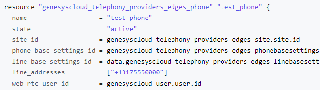

You may be looking at some of the resource articles, or have skipped ahead a few pages in the workshop and asked yourself “Why would I go through all of this to simply construct a skill?”
While this workshop is intended to provide a foundational knowledge of CX as Code, the scope of CX as Code is well beyond spending 4 hours building a skill
The Genesys Cloud administrative functions within the GUI are designed to be incredibly simple, but there are numerous applications where CX as Code can bolster and automate your administrative capabilities
CX as Code allows you to build once and deploy everywhere, accelerating multi-org deployments or configuration changes
CX as Code alleviates the need for administrators to worry about which configuration objects have what dependencies; Terraform will reference the requested resources and data sources to map out the logical order of how things need to be constructed based upon the required dependencies.
Below is an example of a construct phone resource with numerous dependencies, such as site and base information, that would need to be constructed prior to being able to build this phone. Terraform will map out the required construction sequence to ensure all dependencies are constructed in the order necessary to achieve the phone construction

In addition to the use cases above, if any of these items are a concern to you, CX as Code may be the solution;